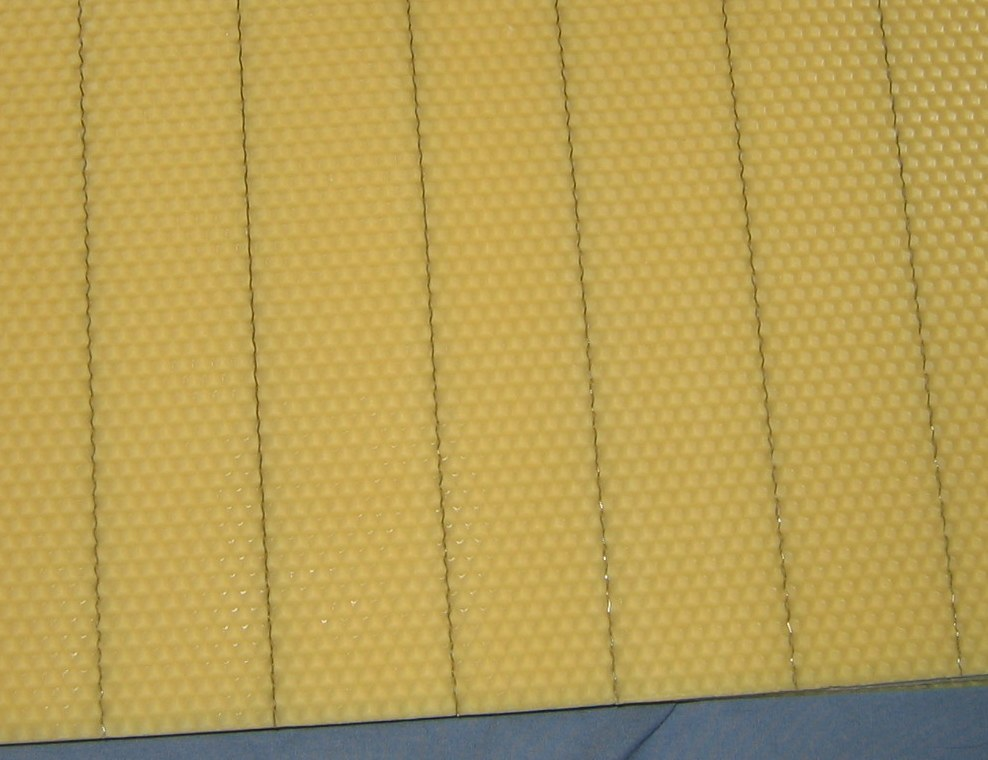
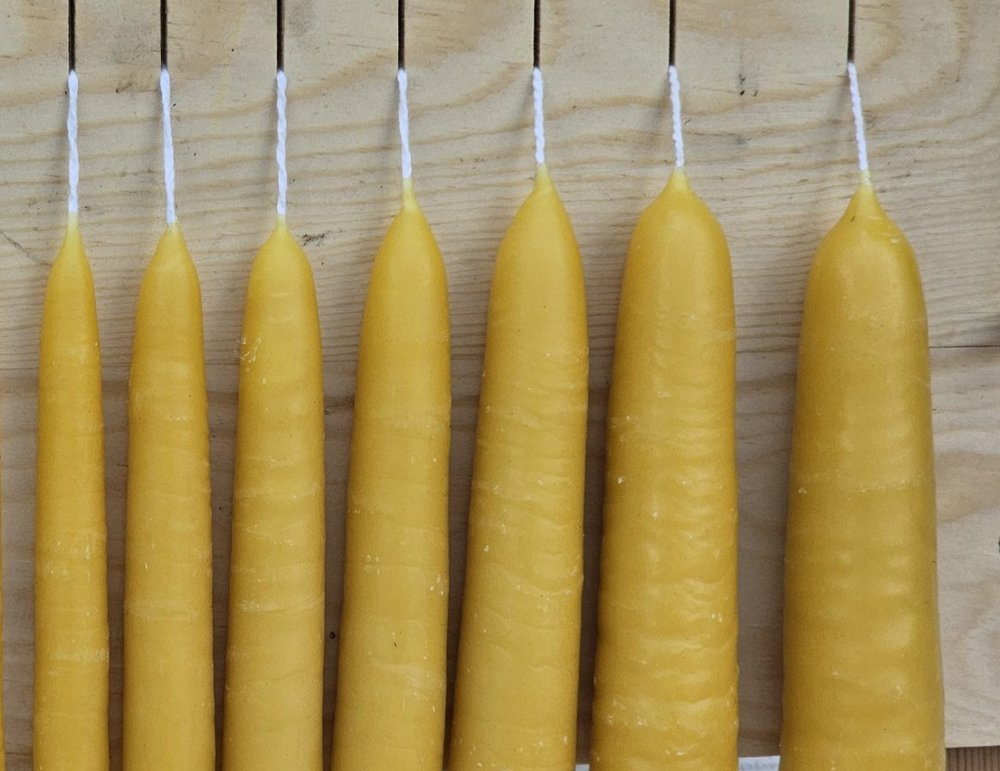

Produkti
No mūsu dravas jūsu galdam
Tradicionāli biškopības produkti, ražoti un fasēti mūsu saimniecībā Vītiņu pagastā. Par aktuālo produktu pieejamību sazinies ar Tomu.
Vaska un citi produkti

Vaska šūnas
Kvalitatīvas vaska šūnas rāmjiem, 410×260 mm, pārstrādātas no tīra bišu vaska. Piedāvājam arī vaska maiņu un pārstrādi.

Vaska sveces
Rokām lietas bišu vaska sveces ar dabīgu vaska aromātu.

Kandijs
Ambrosia kandijs: gatava cukura pasta bišu barošanai ziemā. 12,5 kg un 15 kg iepakojumos.

Bišu mātes
Apaugļotas un neapaugļotas bišu mātes no pārbaudītām, produktīvām saimēm.